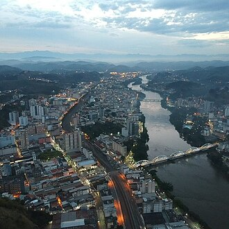

A onde estamos?
A ArcelorMittal é a líder mundial na produção de aço. Com sede global em Luxemburgo e matriz nacional em Belo Horizonte (MG), a empresa está presente em mais de 60 países ao redor do globo, incluindo operações na América do Norte, América do Sul, Europa e África
Presença no Brasil
No Brasil, maior mercado da empresa na América Latina, a ArcelorMittal possui escritórios, centros de distribuição, minas e usinas siderúrgicas presentes em oito estados:Minas Gerais: Belo Horizonte (sede), João Monlevade, Juiz de Fora, Contagem, Sabará e Itatiaiuçu.Espírito Santo: Serra (Tubarão) e Vitória.Santa Catarina: São Francisco do Sul e Chapecó.São Paulo: Piracicaba, Sumaré e Osasco.Rio de Janeiro: Barra Mansa e Resende.Bahia: Salvador e Feira de Santana.Mato Grosso do Sul: Corumbá e Campo Grande.Ceará: São Gonçalo do Amarante (Pecém)

Fora do Planeta
A ArcelorMittal fornece aços avançados e pós-metálicos de alta tecnologia para o setor aeroespacial, desenvolvendo materiais que combinam leveza e resistência extrema para suportar as condições severas do espaço. Essas soluções inovadoras, que incluem tecnologia de impressão 3D, são fundamentais para a fabricação de estruturas, motores e componentes essenciais de naves espaciais e satélites.